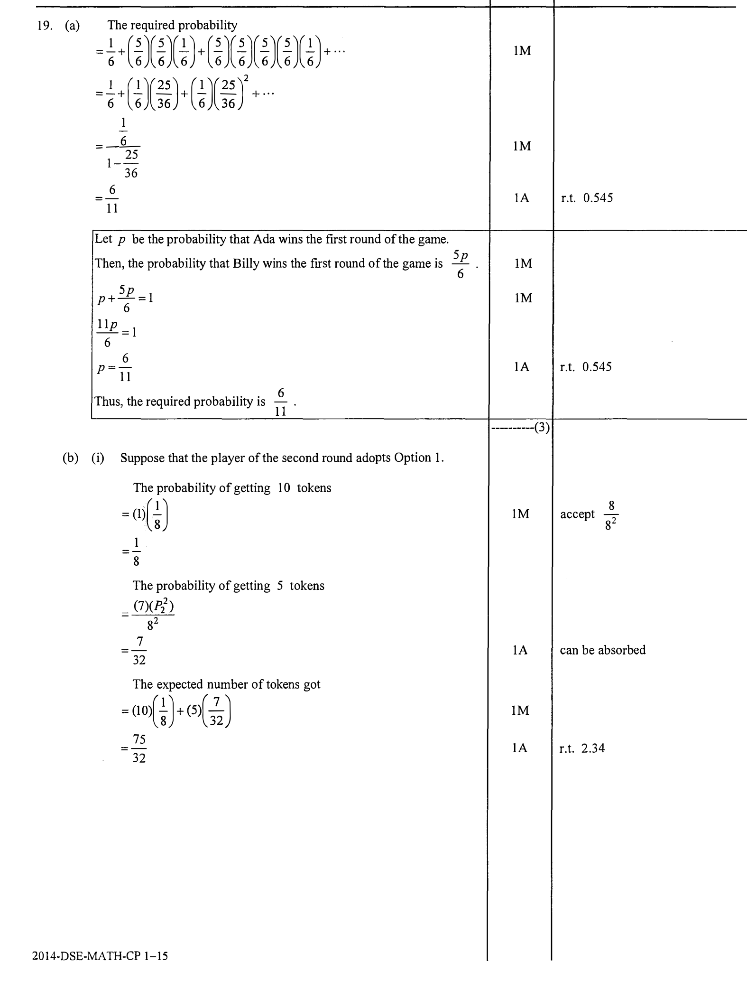

2014 DSE 數學 P1 Q19 答案＋詳解
題目（中文卷）
佩玲及志偉參與一含兩回合的遊戲。在第一回合，佩玲及志偉輪流投擲一枚勻稱骰子。首位擲得點數「3」的參與者勝出第一回合。佩玲及志偉參與第一回合，直至其中一人勝出為止。佩玲首先投擲骰子。
(a) 求佩玲勝出該遊戲第一回合的概率。 (3 分)
(b) 在該遊戲的第二回合，球被逐一投入某部由八個管子並列所組成的裝置內（見圖 8）。當球被投入該裝置時，它會隨機跌進其中一管子內。每個管子最多可容納三個球。

這回合的參與者採納下列兩個選項中的一個。
選項 1：將兩個球逐一投入該裝置內。若該兩個球跌進同一管子內，則該參與者獲 10 個代幣；若該兩個球跌進兩個相鄰的管子內，則該參與者獲 5 個代幣；否則，該參與者不獲代幣。
選項 2：將三個球逐一投入該裝置內。若該三個球跌進同一管子內，則該參與者獲 50 個代幣；若該三個球跌進三個相鄰的管子內，則該參與者獲 10 個代幣；若該三個球跌進兩個相鄰的管子內，則該參與者獲 5 個代幣；否則，該參與者不獲代幣。
(i) 若第二回合的參與者採納選項 1，求所獲代幣的數目的期望值。
(ii) 第二回合的參與者應採納哪一選項才使所獲代幣的數目的期望值達至最大？試解釋你的答案。
(iii) 只有第一回合的勝方參與第二回合。已知第二回合的參與者採納能使所獲代幣的數目的期望值達至最大的選項。志偉宣稱佩玲在該遊戲中不獲代幣的概率超過 0.9。該宣稱是否正確？試解釋你的答案。 (10 分)
試卷完 —
English version（英文卷題目）
Ada and Billy play a game consisting of two rounds. In the first round, Ada and Billy take turns to throw a fair die. The player who first gets a number '3' wins the first round. Ada and Billy play the first round until one of them wins. Ada throws the die first.
(a) Find the probability that Ada wins the first round of the game. (3 marks)
(b) In the second round of the game, balls are dropped one by one into a device containing eight tubes arranged side by side (see Figure 8). When a ball is dropped into the device, it falls randomly into one of the tubes. Each tube can hold at most three balls.

The player of this round adopts one of the following two options.
Option 1: Two balls are dropped one by one into the device. If the two balls fall into the same tube, then the player gets 10 tokens. If the two balls fall into two adjacent tubes, then the player gets 5 tokens. Otherwise, the player gets no tokens.
Option 2: Three balls are dropped one by one into the device. If the three balls fall into the same tube, then the player gets 50 tokens. If the three balls fall into three adjacent tubes, then the player gets 10 tokens. If the three balls fall into two adjacent tubes, then the player gets 5 tokens. Otherwise, the player gets no tokens.
(i) If the player of the second round adopts Option 1, find the expected number of tokens got.
(ii) Which option should the player of the second round adopt in order to maximise the expected number of tokens got? Explain your answer.
(iii) Only the winner of the first round plays the second round. It is given that the player of the second round adopts the option which can maximise the expected number of tokens got. Billy claims that the probability of Ada getting no tokens in the game exceeds 0.9. Is the claim correct? Explain your answer. (10 marks)
END OF PAPER
Answers written in the margins will not be marked. There are 30 questions in Section A and 15 questions in Section B. The diagrams in this paper are not necessarily drawn to scale. Choose the best answer for each question.
Section A
試卷完 —
官方評卷參考（Marking Scheme）

考評報告
甚差。大部分考生誤以$\frac{1}{6}$或$\frac{5}{36}$作為答案。甚差。大部分考生未能得出於第二回合參與者採納選項1時獲5個代幣的概率。甚差。大部分考生未能得出於第二回合參與者採納選項2時獲5個代幣的概率。甚差。大部分考生未能得出佩玲在該遊戲中不獲代幣的概率。